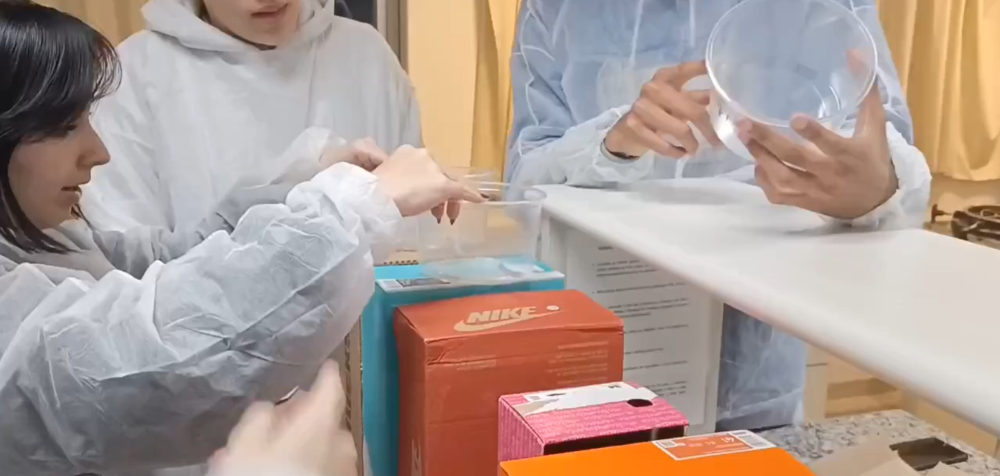
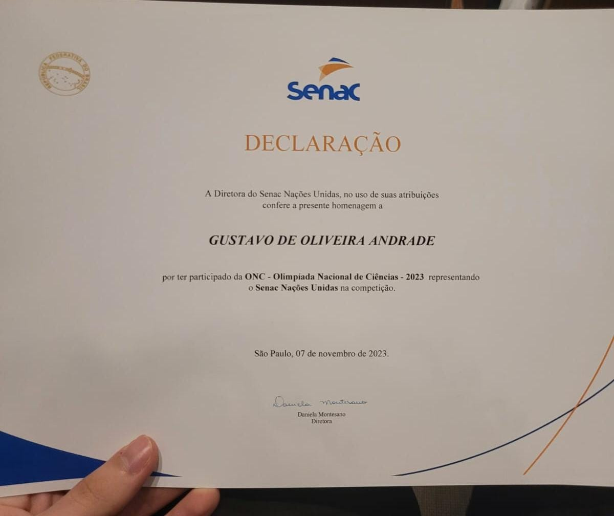

Para o trabalho de CN do segundo ano, escolhi o projeto que a sala desenvolveu para construirmos uma maquete funcional de como era feita a filtragem da água para consumo.
Vou lembrar desse projeto por muito tempo pois foi um dos primeiros trabalhos que a sala se uniu e se empenhou a trabalhar em equipe para construir a maquete e fazer funcionar todo o processo de filtração.

Já no terceiro ano não escolhi um trabalho ou tarefa, e sim uma conquista minha, neste ano participei da Olimpíada Nacional de Ciências (ONC) e passei para a segunda fase e recebi um certificado.
Acho que isso vai ficara na minha memória para sempre, afinal nunca me imaginei ganhando uma gratificação dessas, essa conquista me fez acreditar que sou capaz de coisas que nem imaginava e muito mais.